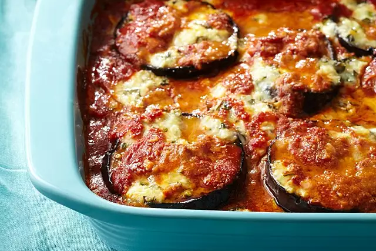

Lasagna

This classic Italian dish from Sicily is often simply referred to as 'Parmigiana' by the Sicilian locals.
The richness and depth of flavor that you get from this authentic version is well worth the extra effort. Serve eggplant Parmigiana with nothing more than crusty bread and a green salad.
Ingredients
- ½ cup extra-virgin olive oil, or as needed
- 6 eggplants, trimmed and cut into 1/2-inch thick slices
- 1 ⅓ cups crushed tomatoes in puree
- 1 tablespoon olive oil, or more to taste
- 2 cloves garlic
- 1 bunch fresh basil, divided
- 18 ounces fresh mozzarella cheese, drained and sliced
Steps
- Heat about 1 inch extra-virgin olive oil in a deep skillet over medium heat. Pat eggplant slices dry with a paper towel and fry eggplant in batches in the hot oil until golden, 2 to 3 minutes per side. Transfer eggplant to a paper towel-lined plate using a slotted spoon; season with salt.
- Preheat oven to 375 degrees F (190 degrees C). Lightly grease a baking dish.
- Place a layer of fried eggplant in the baking dish and cover with a layer of tomato sauce. Top with a layer of mozzarella cheese, oregano, Parmesan cheese, and chopped basil leaves, in that order. Continue layering in the same order with remaining ingredients, ending with a layer of mozzarella cheese and a drizzle of olive oil.
- Bake in the preheated oven until heated through and cheeses are melted, about 40 minutes. Let stand a few minutes before slicing.